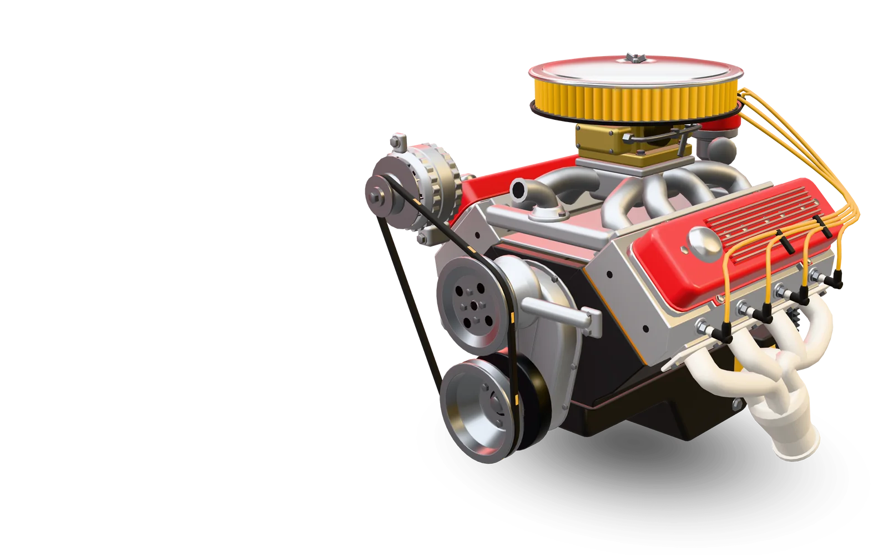
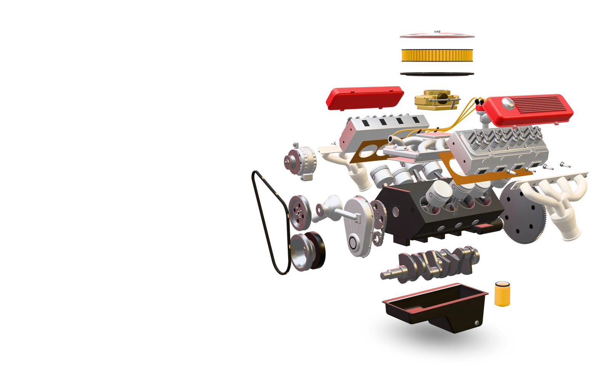

Scroll down
Stand-in for the sections above the engine. Query options:
engine=3d|lite|static, p=0..1 (fixed progress),
layout=portrait|landscape with poster=1, hud=1,
site=1 (the real global stylesheet), lang=ka.


Under the hood
We know what is inside.
Every job starts with knowing the engine part by part.
Down to the last bolt.
Diagnostics, repair and builds by people who take engines apart every day.
And we stock the parts.
Search by VIN or by car and see the price.
Find a part1,284 items in stock today
Part search
Stand-in for the section the engine hands off to.